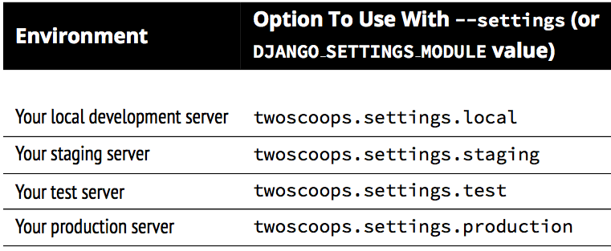
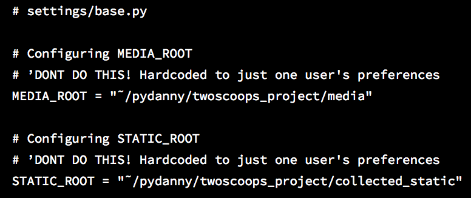
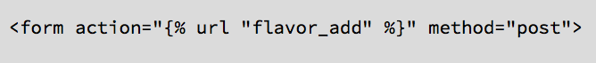

Django Best Practices
March, 2014
This presentation is prepared based on the great book Two Scoops of Django: Best Practices For Django 1.5 by Daniel Greenfeld and Audrey Roy

Core Concepts
KISS
Keep It Simple, Stupid
Fat Models, Helper Modules, Thin Views, Stupid Templates
- Put more logic into anything but views and templates
- Template tags and filters should contain the minimum logic possible
Start With Django by Default
- If we run into obstacles, we explore all possibilities before replacing core Django components
Coding Style
The Importance of Making Your Code Readable
-
Avoid abbreviating variable names
- Good: balance_sheet_decrease
- Bad: bsd or bal_s_d
- Write out your function argument names
- Document your classes and methods
- Refactor repeated lines of code into reusable functions or methods
PEP8
- Use 4 spaces per indentation level
- Separate top-level function and class definitions with two blank lines
- Method definitions inside a class are separated by a single blank line
The Word on Imports
The Order:
- Standard library imports
- Imports from core Django
- Imports from third-party apps
- Imports from the apps that you created as part of your Django project
The Word on Imports
Use Explicit Relative Imports
Don't do this:

Use Explicit Relative Imports
Do this:
Import Types
Get into the habit of using explicit relative imports.
Avoid Using Import *
Don't do this:
Avoid Using Import *
The reason for this is to avoid implicitly loading all of another Python module’s locals into and over our current module’s namespace, which can produce unpredictable and sometimes catastrophic results.
Django Coding Style Guidelines
- Use underscores (the '_' character) in URL pattern names rather than dashes as this is friendlier to more IDEs and text editors.
- For the same reason, use underscores rather than dashes in template block names.
- Follow the commonly used naming pattern of <app_name>_tags.py for template tags
Summary
- Follow a consistent coding style
- Projects with varying styles are much harder to maintain, slowing development and increasing the chances of developer mistakes
The Optimal Django Environment Setup
Use the Same Database Engine Everywhere
A common developer pitfall is using SQLite3 for local development and PostgreSQL (or another database besides SQLite3) in production.
They may not behave identical in different environments.
- Fixtures Are Not a Magic Solution
- You Can’t Examine an Exact Copy of Production Data Locally
- Different Databases Have Different Field Types/Constraints
Use Pip and Virtualenv
- Pip is used to manage and install Python packages
- Without virtualenv you have to update dependency versions every time you switch projects
- If that sounds tedious, keep in mind that most real Django projects have at least a dozen dependencies to maintain
- $ source ~/Envs/udemy/bin/activate
Install Django and Other Dependencies via Pip
Use a Version Control System
How to Layout Django Projects
Prefered Project Layout
Top Level: Repository Root
- The top-level <repository_root>/ directory is the absolute root directory of the project
- Place other critical components like the README.rst, docs/ directory, design/ directory, .gitignore, requirements.txt files, and other high-level files that are required for deployment
Second Level: Django Project Root
- This directory contains the <configuration_root>, media and static directories, a site-wide templates directory, as well as Django apps specific to your particular project
Third Level: Configuration Root
- <configuration_root> directory is where the settings module and base URLConf (urls.py) are placed
- This must be a valid Python package (containing an __init__.py module)
Sample Project Layout

What About the Virtualenv?
- Put all our environments in one directory and all our projects in another
TIP: Listing Current Dependencies
pip freeze --local
Template to Generate Layout
django-admin.py startproject --template=https://github.com/twoscoops/django-twoscoops-project/zipball/master --extension=py,rst,html $project-name
Summary
Whatever layout is chosen should be documented clearly
Fundamentals of Django App Design
Definitions
- A Django project is a web application powered by the Django web framework
- Django apps are small libraries designed to represent a single aspect of a project. A Django project is made up of many Django apps. Some of those apps are internal to the project and will never be reused; others are third-party Django packages.
- Third-party Django packages are simply pluggable, reusable Django apps that have been packaged with the Python packaging tools.
The Golden Rule of Django App Design
"Write programs that do one thing and do it well"
The Golden Rule of Django App Design
Each app should be tightly focused on its task
If an app can’t be explained in a single sentence of moderate length, or you need to say 'and' more than once, it probably means the app is too big and should be broken up
What to Name Your Django Apps
- When possible keep to single word names like flavors, animals, blog, polls, dreams, estimates, and finances. A good, obvious app name makes the project easier to maintain
- As a general rule, the app’s name should be a plural version of the app’s main model, but there are many good exceptions to this rule, blog being one of the most common ones
- Use valid, PEP 8-compliant, importable Python package names: short, all-lowercase names without numbers, dashes, periods, spaces, or special characters. If needed for readability, you can use underscores to separate words, although the use of underscores is discouraged
When in Doubt, Keep Apps Small
Try and keep your apps small. Remember, it’s better to have many small apps than to have a few giant apps.
Summary
- Each Django app should be tightly-focused on its own task, possess a simple, easy-to-remember name
- If an app seems too complex, it should be broken up into smaller apps
Settings and Requirements Files
Best Practices
-
All settings files need to be version-controlled
- This is especially true in production environments, where dates, times, and explanations for settings changes absolutely must be tracked
-
Don’t Repeat Yourself
- You should inherit from a base settings file rather than cutting-and-pasting from one file to another
-
Keep secret keys safe
- They should be kept out of version control
Avoid Non-Versioned Local Settings
Let’s break up development, staging, test, and production settings into separate components that inherit from a common base file all tracked by version control
Using Multiple Settings Files
TIP: Multiple Files with Continuous Integration Servers
You’ll also want to have a ci.py module containing that server’s settings.
Run Server
python manage.py runserver --settings=udemy.settings.local
--settings or DJANGO_SETTINGS_MODULE
DEV Settings Example
Keep Secret Keys Out with Environment Variables
- Secrets often should be just that: secret! Keeping them in version control means that everyone with repository access has access to them
- Secret keys are configuration values, not code
To resolve this, our answer is to use environment variables
Benefits of Using EV
- Keeping secrets out of settings allows you to store every settings file in version control without hesitation. All of your Python code really should be stored in version control, including your settings
- Instead of each developer maintaining an easily-outdated, copy-and-pasted version of the local_settings.py.example file for their own development purposes, everyone shares the same version-controlled settings/local.py
- System administrators can rapidly deploy the project without having to modify files containing Python code
- Most platforms-as-a-service recommend the use of environment variables for configuration and have built-in features for setting and managing them
Local Settings & Usage
Using Multiple Requirements Files
- First create a requirements/ directory in the <repository_root>
- Then create '.txt' files that match the contents of your settings directory
Sample Config
base.txt
local.txt
Install From Reqs File
for development env
for production env
Handling File Paths in Settings
Don't hardcode your paths
Hardcoded Paths
Don't do this:
Relative Paths with Unipath
Do this:
Relative Paths with Std Libs
Do this:
Summary
- Everything except for critical security related values ought to be tracked in version control
- Any project that’s destined for a real live production server is bound to need multiple settings and requirements files
- The same thing applies to requirements files. Working with untracked dependency differences increases risk as much as untracked settings
Database/Model Best Practices
Basics
- Break Up Apps With Too Many Models
- Don’t Drop Down to Raw SQL Until It’s Necessary
- Add Indexes as Needed
- Be Careful With Model Inheritance
- Use South for Migrations
Condiser Adding Indexes?
- The index is used frequently, as in 10-25% of all queries
- There is real data, or something that approximates real data, so we can analyze the results of indexing
- We can run tests to determine if indexing generates an improvement in results
Django Model Inheritance
No Model Inheritance if models have a common field, give both models that field
- Pro: Makes it easiest to understand at a glance how Django models map to database tables
- Con: If there are a lot of fields duplicated across models, this can be hard to maintain
Django Model Inheritance
Abstract base classes tables are only created for derived models
- Pro: Having the common fields in an abstract parent class saves us from typing them more than once. We don’t get the overhead of extra tables and joins that are incurred from multi-table inheritance
- Con: We cannot use the parent class in isolation
Django Model Inheritance
Multi-table inheritance tables are created for both parent and child. An implied OneToOneField links parent and child
- Pro: Gives each model its own table, so that we can query either parent or child model. Also gives us the ability to get to a child object from a parent object: parent.child
- Con: Adds substantial overhead since each query on a child table requires joins with all parent tables. We strongly recommend against using multi-table inheritance
Django Model Inheritance
Proxy Models a table is only created for the original model
- Pro: Allows us to have an alias of a model with different Python behavior
- Con: We cannot change the model’s fields
WARNING: Avoid Multi-Table Inheritance
Multi-table inheritance, sometimes called "concrete inheritance" is considered by the authors and many other developers to be a bad thing. We strongly recommend against using it
Django Model Design
Design Basics
- Start Normalized
- Cache Before Denormalizing
- Denormalize Only if Absolutely Needed
- When to Use Null and Blank
Null vs. Blank
Model Managers
Model Managers Basics
Every time we use the Django ORM to query a model, we are using an interface called a model manager to interact with the database
Django provides a default model manager for each model class, but we can define our own
Custom Model Manager
Custom Model Manager
Summary
- Take the time to design models thoughtfully
- Start normalized, and only denormalize if you’ve already explored other options thoroughly
- Try to address your performance issues with caching
- Don’t forget to use indexes. Add indexes when you have a better feel
- If you decide to use model inheritance, inherit from abstract base classes rather than concrete models. You’ll save yourself from the confusion of dealing with implicit, unneeded joins
- Use South to manage your data and schema migrations
Function- and Class- Based Views
When to use FBV or CBVs
Keep View Logic Out of URLConfs
- The views modules should contain view logic
- The URL modules should contain URL logic
Stick to Loose Coupling in URLConfs
Best Practices
- Don’t Repeat Yourself: No argument or attribute is repeated between views
- Loose coupling: We’ve removed the model and template names from the URLConf because views should be views and URLConfs should be URLConfs. We should be able to call our views from one or more URLConfs, and our approach lets us do just that
- URLConfs should do one thing and do it well: Related to our previous bullet, our URLConf is now focused primarily on just one thing: URL routing. We aren’t tracking down view logic across both views and URLConfs, we just look in our views
- Our views benefit from being class-based: Our views, by having a formal definition in the views module, can inherit from other classes. This means adding authentication, authorization, new content formats, or anything other business requirement tossed our way is much easier to handle
- Infinite flexibility: Our views, by having a formal definition in the views module, can implement their own custom logic
Try to Keep Business Logic Out of Views
- Placing so much logic in our views made it much harder to deliver new formats such as PDF or REST API
- Business logic is placed into easily reusable components, and called from within views, it makes extending components of the project to do more things much easier
Best Practices for Class-Based Views
Guideline when writing CBVs
- Less view code is better
- Never repeat code in views
- Views should handle presentation logic. Try to keep business logic in models when possible, or in forms if you must
- Keep your views simple
- Keep your mixins simpler
Mixin Rules
- The base view classes provided by Django always go to the right
- Mixins go to the left of the base view
- Mixins should inherit from Python’s built-in object type
Django CBVs
Constraining Django CBV Access to Authenticated Users
PS: It uses braces lib
Things to Know About Forms
Statistics
- 95% of Django projects should use ModelForms
- 91% of all Django projects use ModelForms
- 80% of ModelForms require trivial logic
- 20% of ModelForms require complicated logic
Use the POST Method in HTML Forms
Every HTML form that alters data must submit its data via the POST method
The only exception you’ll ever see to using POST in forms is with search forms, which typically submit queries that don’t result in any alteration of data.
Know How Form Validation Works
When you call form.is_valid(), a lot of things happen behind the scenes. The following things occur according to this workflow:
- If the form has bound data, form.is_valid() calls the form.full_clean() method
-
form.full_clean() iterates through the form fields and each field validates
itself:
- Data coming into the field is coerced into Python via the to_python() method or raises a ValidationError
- Data is validated against field-specific rules, including custom validators. Failure raises a ValidationError
- If there are any custom clean_ <field>() methods in the form, they are called at this time
- form.full_clean() executes the form.clean() method
-
If it’s a ModelForm instance, form._post_clean() does the following:
- Sets ModelForm data to the Model instance, regardless of whether form.is_valid() is True or False
- Calls the model’s clean() method. For reference, saving a model instance through the ORM does not call the model’s clean() method
Form Data Is Saved to the Form, Then the Model Instance
- First, form data is saved to the form instance
- Later, form data is saved to the model instance
Summary
Once you dig into forms, keep yourself focused on clarity of code and testability